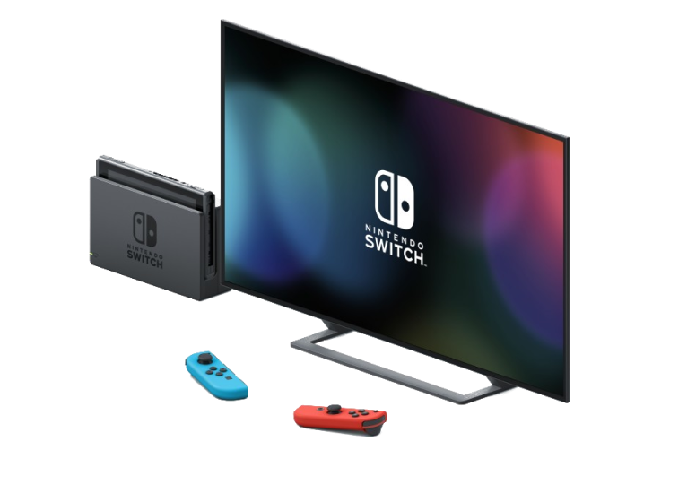
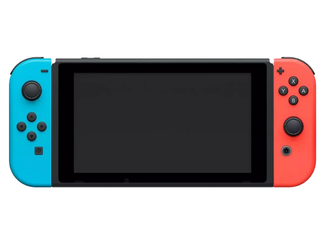
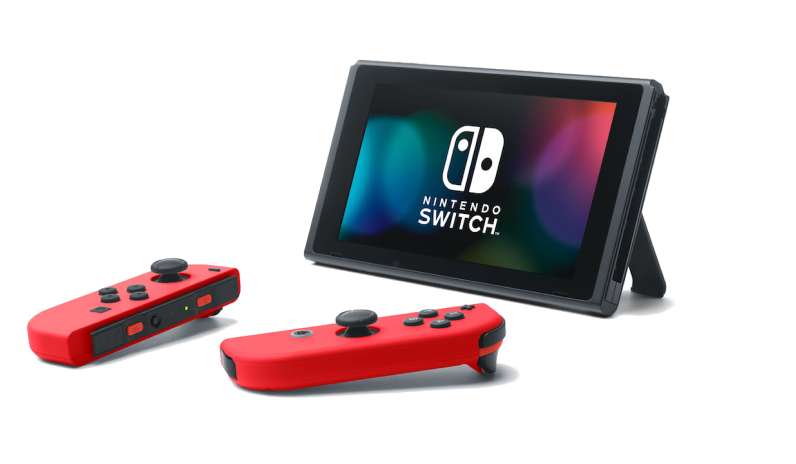

Najlepsza konsola dla całej rodziny. Innowacyjne podejście do
rozgrywki da możliwość zabawy dla całej rodziny i znajomych.
Stacjonarny
Przenośny
Podręczny

Nowa odsłona bestsellerowej konsli
Nintendo Switch, zaprojektowana z myślą
o grze przenośnej, umożliwia granie w tytuły
dostępne na Nintendo Switch* gdzie chcesz.
Dostępne są różen warianty kolorystyczne:
-Turkusowy
-Żółty
-Szary
-Zacian and Zamenta
...i wiele innych.
*Nie obsługuje wybranych tytułów Nintendo Switch
Kontroler Joy-Con oferuje nowe doznania rozgrywki, z pomocą
nowoczesnych akceleometrów, żyroskopowych czujników
ruchu i wibracją HD, dzięki którym podczas rozgrywki
poczujesz wszystko to, co się dzieje na ekranie, od
najmniejszego wstrząsu, po odczuwanie głębi dźwięków.
| Tryb Stacjonarny | Tak | Nie |
| Tryb Podręczny | Tak | Nie |
| Tryb Przenośny | Tak | Tak |
| Odłączalne Joy-Cony | Tak | Nie |
| Obrazy | 6.2" 720P | 5.5" 720P |
| Bateria | 4.5H - 9H (zależne od tytułu) | 2.5H - 6.5H (zależne od tytułu) |
| Złącza | HDMI - 1 szt. USB 3.0 - 1 szt. USB 2.0 - 2 szt. Wyjście audio - 1 szt. Czytnik kart pamięci microSD - 1 szt. | USB-C - 1 szt. Wyjście audio - 1 szt. Czytnik kart pamięci microSD - 1 szt. |
Wsparcie | Praca | Kontakt | Klasyfikacja gier | Regulamin
Język: Polski